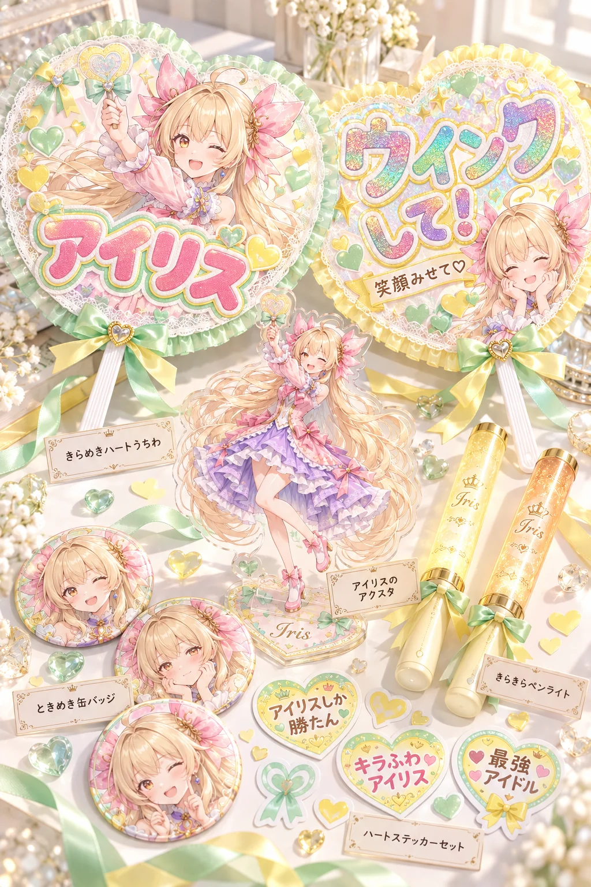

GPT-image-2 用2026-10-11
ChatGPT（GPT-image-2）に自分のキャラの絵を1枚渡して、この文を貼るだけ。名前入りのハート形のうちわ、ファンサをお願いするうちわ、ペンライト、ウインクするアクスタ、表情ちがいの缶バッジ、ステッカーまで、うちの子の応援グッズ一式を机に並べた写真ができあがります。うちわの言葉とグッズの名前は、AIがキャラを読み取って考えてくれます。名前のほかは空欄でもOK。色・服・背景・ポーズを変えたいときは、その欄に書くだけです。
作例

※作例の画像の転載・保存しての再配布はご遠慮ください。
3人のおしゃべり（推し活うちわ）
アイリス
見て見て！ あたしの推し活グッズ！ 「ウインクして！」のうちわに、アクスタまでウインクしてる〜！
フィオナ
アイリスちゃんの名前入りの「しか勝たん」ステッカーまであります……。テーマカラーの欄に書いたミントとレモンの色で、ぜんぶそろっていますね
ルピナス
わたしのうちわは「やさしく手ふって♡」。ファンサのお願いまでAIが考えてくれるのね

アイリス
今日はウインクの日だし、みんなの子にもウインクしてもらお！

ルピナス
名前を書くだけで、その子だけの応援グッズになります。あなたの推しの子のうちわも、ぜひ見せてね
使い方（3ステップ）
- ChatGPT を開いて、画像を作れるモード（GPT-image-2）にする
- 自分のキャラの絵を1枚だけ添付する（自分の絵・使ってよい画像だけ。いつもの絵のままでOK。下の「おまけ」で元絵を作った人は元絵を）
- 下のプロンプトをワンタップでコピーして、いちばん上の「▼ ここに書く」の欄（色の付いたところ）にキャラの名前などを書いて送信する（名前のほかは空欄でもOK。服・背景・ポーズを変えたいときは、その欄に書くだけ）
プロンプト
書くのは「▼ ここに書く」の欄だけ
- 色の付いたところ（「：」のうしろ）に書くだけ。【 】は消さずにそのまま残してね
- 下の文章に出てくる【キャラの名前】などは書き換えなくてOK（AIが上の欄を読んでくれます）
- 任意の欄は空のままでも大丈夫（おまかせになります）
- 👗 服・アクセサリー／背景／ポーズを変えたいときは、その欄に書くだけ。欄に書いた内容が下の文章より優先されるように作ってあるので、下の文章は書き換えなくてOK。空欄なら、服とアクセサリーは添付した絵のまま、背景とポーズは下の文章のとおりになります。顔立ち・髪型・髪色・目の色は、いつも添付した絵のままです
- 💡 添付した絵と違う服にしたいときは、色と形まで具体的に書くと混ざりにくくなります（例：「白いニット」より「白いケーブル編みのニットと紺のプリーツスカート」）
- 🚫 添付する絵は自分のキャラ・自分が権利を持つ画像だけ。版権キャラ・他の人のキャラの画像は固く禁止です（下の「配布ルール」）
プロンプト
添付した画像のキャラクターを読み取って、そのキャラを推すための「推し活うちわ」と応援グッズ一式を机に並べた写真を作ってください。 うちわの文字、ファンサのお願いのひとこと、グッズの名前は、キャラの見た目や性格からあなたが考えて書いてください。 ▼ ここに書く（「：」のうしろに書くだけ。【 】は消さずにそのまま。名前だけは必ず書く。ほかの空の欄はおまかせ） 服・アクセサリー・背景・ポーズを変えたいときは、その欄に書くだけ（下の文章は書き換えなくてOK） 【キャラの名前】： 【テーマカラー】： 【服・アクセサリー】： 【背景】： 【ポーズ・追加の指示】： ▲ ここまで（下の文章に出てくる【 】は、上の欄に書いた内容のこと。下は書き換えない） ■ 上の欄の使い方（ここは変えない） ・【服・アクセサリー】が書いてあれば、アクリルスタンドとうちわの絵のキャラの服とアクセサリーをそれにする。顔立ち・髪型・髪色・目の色・髪飾りは添付画像のまま。空欄なら添付画像の服のまま ・【背景】が書いてあれば、下の文章の撮影の場所よりそちらを優先する。空欄なら下の文章のとおり ・【ポーズ・追加の指示】が書いてあれば、アクリルスタンドとうちわの絵のキャラのポーズをそちらにする。空欄なら下の文章のとおり ■ 応援グッズ一式の作り ・ハート形の大きな手作りうちわ2本を中心に、ペンライト2本、アクリルスタンド、缶バッジ3つ、ハートのステッカーを、机の上にきれいに並べた写真 ・うちわ1本目には、そのキャラの繊細なアニメイラストの切り抜きと、ぷっくりした丸文字の大きな「【キャラの名前】」 ・うちわ2本目には、キラキラのホログラムの文字で、ファンサをお願いする短いひとこと（キャラに合わせてあなたが考える） ・アクリルスタンドは、そのキャラが片目をつぶってウインクする全身の立ち姿。顔立ち・髪型・髪色・目の色・髪飾りは添付画像のキャラだと一目でわかるように ・缶バッジ3つには、キャラの表情違い（笑顔・照れ顔・ウインク） ・ペンライトは、キャラの髪と目の色に光らせる ・【テーマカラー】が書いてあれば、うちわの縁取りとリボン、ステッカーの色にする。空欄ならキャラの髪と目の色から選ぶ ・文字は多くてよい。崩れや誤字のない、正しい日本語で ・撮影の場所は、午後の光の差す白い机の上。リボン、ラメ、小さなハートのシールが散らばり、手前と奥がやわらかくボケている ■ 仕上がりの質（ここは変えない） ・うちわの厚紙とホログラムの虹色のきらめき、アクリルの透明感と縁の光、缶バッジのつやまで細かく描く ・うちわとアクスタのイラストは、細い線と髪の毛束、宝石のように何層も重ねた瞳のハイライト、肌のやわらかい陰影と血色まで ・午後の光のやわらかさとペンライトの色の光、手前と奥のボケで空気感を出す ・上品で透明感のある配色。ハイエンドなアニメイラストと商品写真の最高品質、超高精細 ・縦長 2:3
書くところ
| 欄 | 説明 | 例 |
|---|---|---|
| 【キャラの名前】 | 必須。うちわの大きな丸文字と、グッズの名前に入ります | アイリス／ルピナス／フィオナ |
| 【テーマカラー】 | 任意。うちわの縁取りとリボン、ステッカーの色になります。空欄なら、キャラの髪や目の色からAIが選びます | （空欄）／ミントグリーンとレモンイエロー |
| 【服・アクセサリー】 | 任意。空欄なら添付した絵の服のまま。書くと、アクスタとうちわの絵のキャラがその服に着替えます（顔立ち・髪型・髪色・目の色は添付のまま） | （空欄）／アイドルのステージ衣装とハートの髪飾り |
| 【背景】 | 任意。グッズを並べた場所。空欄なら、午後の光の差す白い机の上です | （空欄）／ライブ会場の客席、ペンライトの光の海 |
| 【ポーズ・追加の指示】 | 任意。アクスタとうちわの絵のキャラのポーズ。空欄なら、ウインクする全身の立ち姿です | （空欄）／うちわを両手で高く掲げて、片目をつぶっている |
（おまけ）元絵を綺麗にしておくと、もっと綺麗に
元絵は作っても作らなくても大丈夫です。いつものキャラの絵をそのまま添付しても、上のプロンプトで綺麗に仕上がります。もっと綺麗に・毎回ブレずに作りたい人は、先にこの手順でこのプロンプトに合わせた「元絵」を作っておくのがおすすめです。書き換えるところはないので、そのままコピーして使えます。
- ChatGPT を開き、新しいチャットで画像を作れる状態（GPT-image-2）にする
- 自分のキャラの絵を1枚だけ添付する（全身が写っている、いちばん「その子らしい」絵がおすすめ。ラフや小さい絵でも大丈夫）
- 下の「元絵を作るプロンプト」をそのままコピーして貼り、送信する（書き換えるところはありません）
- できた絵を保存する。これがあなたのキャラの、このプロンプト用の「元絵」です
- 新しいチャットを開き、保存した元絵を添付して、このページの上の「プロンプト」を貼って送信する
元絵を作るプロンプト（そのままコピーして送るだけ）
添付した画像のキャラクターを、「推し活うちわと応援グッズ」プロンプトで使う元絵として、同じキャラのまま最高品質の繊細なアニメイラストで描き直してください。 ■ キャラ（ここは添付画像のまま） ・顔立ち、髪型、髪の長さ、髪色、目の色、髪飾り、服のデザインと色、アクセサリーは添付画像のまま変えない ・添付画像で見えない部分は、見えている部分から自然につなげて描く ■ 構図（アクリルスタンドとうちわの絵になる形） ・靴まで入る全身の立ち姿。片目をつぶってウインクしながら、片手でピースをして明るく笑う ・髪型と髪色、髪飾り、服の色と形がはっきり見えるように ・背景は白から淡い桃色へのやわらかいグラデーションだけ。小物や文字は入れない ■ 仕上がりの質 ・線は細く繊細に。髪は一本一本の毛束と、光が透けるやわらかさまで描き込む ・瞳は宝石のように何層もの色とハイライトを重ねて、きらきらと輝かせる ・肌はやわらかな陰影と、頬にほんのり血色 ・服のレースやフリル、刺繍、アクセサリーの宝石と金具まで細かく描く ・やわらかな光で輪郭をきれいに。上品で透明感のある配色、ハイエンドなアニメイラストの最高品質、超高精細 ・縦長 2:3
うまくいかない時
- 元絵は「アクスタ」として使いやすい、靴まで入る全身でウインクしながらピースする形にしてあります。
メモ
- ファンサのうちわの言葉は、毎回AIがキャラに合わせて考えます（試し焼きでは「ウインクして♡」「やさしく手ふって♡」など）。ステッカーの言葉もいろいろ出ます。
- グッズの名前の札（「きらめきアイリス アクリルスタンド」など）も、AIが考えて小さく添えます。
- 値段や日付のような数字は入らないようにしてあります。
- 服を変えたら顔や髪まで変わってしまったときは、同じチャットで「顔立ち・髪型・髪色・目の色は添付画像のままで、服とアクセサリーだけ【服・アクセサリー】にして描き直して」と送ってください。
- 文字がつぶれたり誤字があるときは、同じチャットで「文字の崩れと誤字を直して、もう一度」と送ると直りやすいです。
- 「■ 上の欄の使い方」と「■ 仕上がりの質」の段落は消さずにそのまま送ってください。欄に書いた内容が優先されるのと、ホログラムのきらめきやアクリルの透明感は、ここで決まっています。
配布ルール
- ⭕ プロンプトの改変は自由です。
- ⭕ 生成した画像は SNS に投稿して大丈夫です。
- ❌ プロンプト文そのものの転載・再配布・販売はしないでください。
- ❌ 自作のプロンプトだと名乗ることはやめてください。
- ❌ このページの作例画像の無断転載はしないでください。
- 🚫 アニメ・漫画・ゲームなどの版権キャラクター（著作権・商標のあるキャラ）、他の人のキャラクターやイラスト、実在の人物の写真を添付画像にして使うことは固く禁止します。版権キャラの名前や、版権キャラの LoRA を入れて使うことも禁止です。
- ✅ 添付してよいのは、自分で作ったキャラクター・自分が権利を持つ画像（または権利者から使ってよいと言われた画像）だけです。
- ⚠️ 生成した画像の使い方（投稿・公開など）は、使った人の責任でお願いします。権利の問題が起きても、配布者は責任を負えません。
- 💌 使ったら #ルピナスプロンプト を付けて見せてくれたら、とても嬉しいです（任意です）。
📚 これまでの配布プロンプト（バックナンバー）が見たい方は、直接ルピナスまでお気軽にお問い合わせください。